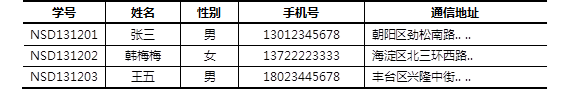

本案例要求熟悉MySQL官方安装包的使用，快速构建一台数据库服务器：
本课程将使用64位的RHEL 6操作系统，MySQL数据库的版本是5.6.15。
访问http://dev.mysql.com/downloads/mysql/，找到MySQL Community Server下载页面，平台选择“Red Hat Enterprise Linux 6 / Oracle Linux 6”，然后选择64位的bundle整合包下载，如图-1所示。
图-1
注意：下载MySQL软件时需要以Oracle网站账户登录，如果没有请根据页面提示先注册一个（免费） 。
实现此案例需要按照如下步骤进行。
步骤一：准备工作
1）卸载系统自带的mysql-server、mysql软件包（如果有的话）
[root@dbsvr1 ~]# yum -y remove mysql-server mysql Setting up Remove Process No Match for argument: mysql-server rhel6dvd | 3.9 kB 00:00 ... Package(s) mysql-server available, but not installed. No Match for argument: mysql Package(s) mysql available, but not installed. No Packages marked for removal
2）清理/etc/my.cnf配置文件
此配置文件由RHEL自带的mysql-libs库提供：
[root@dbsvr1 ~]# rpm -qf /etc/my.cnf mysql-libs-5.1.66-2.el6_3.x86_64
大量的系统软件包都需要用到mysql-libs库，因此不建议直接卸载此软件包。最好是安装新的MySQL数据库软件时，采用 -U 升级的方式来进行替换。
配置文件/etc/my.cnf若不需要使用，可以直接删除。或者保险起见，也可以将其改名备份：
[root@dbsvr1 ~]# mv /etc/my.cnf /etc/my.cnf.old
步骤二：安装MySQL-server、MySQL-client软件包
1）释放bundle整合包
[root@dbsvr1 ~]# cd /var/ftp/pub/ [root@dbsvr1 pub]# tar xvf MySQL-5.6.15-1.el6.x86_64.rpm-bundle.tar MySQL-shared-5.6.15-1.el6.x86_64.rpm //共享库 MySQL-shared-compat-5.6.15-1.el6.x86_64.rpm //兼容包 MySQL-server-5.6.15-1.el6.x86_64.rpm //服务端程序 MySQL-client-5.6.15-1.el6.x86_64.rpm //客户端程序 MySQL-devel-5.6.15-1.el6.x86_64.rpm //库和头文件 MySQL-embedded-5.6.15-1.el6.x86_64.rpm //嵌入式版本 MySQL-test-5.6.15-1.el6.x86_64.rpm //测试包
2）安装MySQL数据库
[root@dbsvr1 pub]# rpm -Uvh MySQL-*.rpm Preparing... ############################# [100%] 1:MySQL-devel ############################# [ 14%] 2:MySQL-client ############################# [ 29%] 3:MySQL-test ############################# [ 43%] 4:MySQL-embedded ############################# [ 57%] 5:MySQL-shared-compat ############################ [ 71%] 6:MySQL-shared ############################# [ 86%] 7:MySQL-server ############################# [100%]
安装过程中会尝试做一些检测，然后完成基本的初始化任务，期间会给出相关的提示。比如由于MySQL 5.6对TIMESTAMP时间戳的处理不同于之前的版本，会给出警告和提示出解决办法（使用--explicit_defaults_for_timestamp选项）：
2014-11-03 19:02:39 0 [Warning] TIMESTAMP with implicit DEFAULT value is deprecated. Please use --explicit_defaults_for_timestamp server option (see documentation for more details).
MySQL 5.6默认采用的存储引擎不再是MyISAM，而是InnoDB。初始化时若相关的文件不存在，会自动创建并设置相关参数：
2014-11-03 19:02:39 2750 [Note] InnoDB: The InnoDB memory heap is disabled 2014-11-03 19:02:39 2750 [Note] InnoDB: Mutexes and rw_locks use GCC atomic builtins 2014-11-03 19:02:39 2750 [Note] InnoDB: Compressed tables use zlib 1.2.3 2014-11-03 19:02:39 2750 [Note] InnoDB: Using Linux native AIO 2014-11-03 19:02:39 2750 [Note] InnoDB: Using CPU crc32 instructions 2014-11-03 19:02:39 2750 [Note] InnoDB: Initializing buffer pool, size = 128.0M 2014-11-03 19:02:39 2750 [Note] InnoDB: Completed initialization of buffer pool 2014-11-03 19:02:39 2750 [Note] InnoDB: The first specified data file ./ibdata1 did not exist: a new database to be created! 2014-11-03 19:02:39 2750 [Note] InnoDB: Setting file ./ibdata1 size to 12 MB 2014-11-03 19:02:39 2750 [Note] InnoDB: Database physically writes the file full: wait... 2014-11-03 19:02:40 2750 [Note] InnoDB: Setting log file ./ib_logfile101 size to 48 MB 2014-11-03 19:02:41 2750 [Note] InnoDB: Setting log file ./ib_logfile1 size to 48 MB 2014-11-03 19:02:44 2750 [Note] InnoDB: Renaming log file ./ib_logfile101 to ./ib_logfile0 2014-11-03 19:02:44 2750 [Warning] InnoDB: New log files created, LSN=45781 2014-11-03 19:02:44 2750 [Note] InnoDB: Doublewrite buffer not found: creating new 2014-11-03 19:02:44 2750 [Note] InnoDB: Doublewrite buffer created 2014-11-03 19:02:44 2750 [Note] InnoDB: 128 rollback segment(s) are active. 2014-11-03 19:02:44 2750 [Warning] InnoDB: Creating foreign key constraint system tables. 2014-11-03 19:02:44 2750 [Note] InnoDB: Foreign key constraint system tables created 2014-11-03 19:02:44 2750 [Note] InnoDB: Creating tablespace and datafile system tables. 2014-11-03 19:02:44 2750 [Note] InnoDB: Tablespace and datafile system tables created. 2014-11-03 19:02:44 2750 [Note] InnoDB: Waiting for purge to start 2014-11-03 19:02:44 2750 [Note] InnoDB: 5.6.15 started; log sequence number 0 A random root password has been set. You will find it in '/root/.mysql_secret'. 2014-11-03 19:02:45 2750 [Note] Binlog end 2014-11-03 19:02:45 2750 [Note] InnoDB: FTS optimize thread exiting. 2014-11-03 19:02:45 2750 [Note] InnoDB: Starting shutdown... 2014-11-03 19:02:47 2750 [Note] InnoDB: Shutdown completed; log sequence number 1625977 2014-11-03 19:02:47 0 [Warning] TIMESTAMP with implicit DEFAULT value is deprecated. Please use --explicit_defaults_for_timestamp server option (see documentation for more details). 2014-11-03 19:02:47 2774 [Note] InnoDB: The InnoDB memory heap is disabled 2014-11-03 19:02:47 2774 [Note] InnoDB: Mutexes and rw_locks use GCC atomic builtins 2014-11-03 19:02:47 2774 [Note] InnoDB: Compressed tables use zlib 1.2.3 2014-11-03 19:02:47 2774 [Note] InnoDB: Using Linux native AIO 2014-11-03 19:02:47 2774 [Note] InnoDB: Using CPU crc32 instructions 2014-11-03 19:02:47 2774 [Note] InnoDB: Initializing buffer pool, size = 128.0M 2014-11-03 19:02:47 2774 [Note] InnoDB: Completed initialization of buffer pool 2014-11-03 19:02:47 2774 [Note] InnoDB: Highest supported file format is Barracuda. 2014-11-03 19:02:47 2774 [Note] InnoDB: 128 rollback segment(s) are active. 2014-11-03 19:02:47 2774 [Note] InnoDB: Waiting for purge to start 2014-11-03 19:02:47 2774 [Note] InnoDB: 5.6.15 started; log sequence number 1625977 2014-11-03 19:02:47 2774 [Note] Binlog end 2014-11-03 19:02:47 2774 [Note] InnoDB: FTS optimize thread exiting. 2014-11-03 19:02:47 2774 [Note] InnoDB: Starting shutdown... 2014-11-03 19:02:49 2774 [Note] InnoDB: Shutdown completed; log sequence number 1625987
关于MySQL数据库的管理员账号root，其密码也不再是空，而是安装时随机生成一个，这种处理方式一定程度上增强了MySQl服务器的安全性。随机生成的密码字串可以从保存到/root/目录下的.mysql_secret文件中找到：
A RANDOM PASSWORD HAS BEEN SET FOR THE MySQL root USER ! You will find that password in '/root/.mysql_secret'. You must change that password on your first connect, no other statement but 'SET PASSWORD' will be accepted. See the manual for the semantics of the 'password expired' flag. Also, the account for the anonymous user has been removed. In addition, you can run: /usr/bin/mysql_secure_installation which will also give you the option of removing the test database. This is strongly recommended for production servers. See the manual for more instructions. Please report any problems with the /usr/bin/mysqlbug script! The latest information about MySQL is available on the web at http://www.mysql.com Support MySQL by buying support/licenses at http://shop.mysql.com New default config file was created as /usr/my.cnf and will be used by default by the server when you start it. You may edit this file to change server settings [root@dbsvr1 pub]#
根据上述提示还可以看到，MySQL要求在首次连接时必须通过“SET PASSWORD”指令修改密码（其他方式无效）。
3）确认安装后的服务脚本、服务状态
查看服务脚本：
[root@dbsvr1 pub]# ls -lh /etc/init.d/mysql -rwxr-xr-x. 1 root root 11K 11月 18 02:28 /etc/init.d/mysql
查看服务状态（默认未运行）：
[root@dbsvr1 pub]# service mysql status MySQL is not running [失败]
mysql服务的自启状态为on：
[root@dbsvr1 ~]# chkconfig --list mysql mysql 0:off 1:off 2:on 3:on 4:on 5:on 6:off
步骤三：启动MySQL服务器程序，确认状态
1）启动MySQL服务程序
启动服务并查看状态：
[root@dbsvr1 pub]# service mysql start Starting MySQL... [确定] [root@dbsvr1 pub]# service mysql status MySQL running (31724) [确定]
服务器进程为mysqld，监听的默认端口为TCP 3306：
[root@dbsvr1 pub]# netstat -anpt | grep mysql tcp 0 0 :::3306 :::* LISTEN 31724/mysqld
2）查看MySQL服务器进程、运行用户
提供连接服务的进程为mysqld，由其父进程mysqld_safe启动。
[root@dbsvr1 pub]# ps -elf | grep mysqld 4 S root 31619 1 0 80 0 - 2834 wait 15:14 pts/0 00:00:00 /bin/sh /usr/bin/mysqld_safe --datadir=/var/lib/mysql --pid-file=/var/lib/mysql/dbsvr1.tarena.com.pid 4 S mysql 31724 31619 0 80 0 - 252496 poll_s 15:14 pts/0 00:00:01 /usr/sbin/mysqld --basedir=/usr --datadir=/var/lib/mysql --plugin-dir=/usr/lib64/mysql/plugin --user=mysql --log-error=/var/lib/mysql/dbsvr1.tarena.com.err --pid-file=/var/lib/mysql/dbsvr1.tarena.com.pid
数据库的默认存放位置为 /var/lib/mysql：
[root@dbsvr1 pub]# ls /var/lib/mysql/ auto.cnf ibdata1 mysql RPM_UPGRADE_HISTORY dbsvr1.tarena.com.err ib_logfile0 mysql.sock RPM_UPGRADE_MARKER-LAST dbsvr1.tarena.com.pid ib_logfile1 performance_schema test
步骤四：启动MySQL服务器程序，确认状态
1）查看随机生成的root管理密码
[root@dbsvr1 ~]# cat /root/.mysql_secret # The random password set for the root user at Tue Jan 7 14:52:44 2014 (local time): 6ptWNWwx //密码为6ptWNWwx
2）使用客户端命令mysql连接到MySQL服务器
提示验证时，填入前一步获得的随机密码，验证成功后即可进入“mysql> ”环境：
[root@dbsvr1 ~]# mysql -u root -p Enter password: //首次连接时，输入安装时生成的随机密码 Welcome to the MySQL monitor. Commands end with ; or \g. Your MySQL connection id is 2 Server version: 5.6.15 Copyright (c) 2000, 2013, Oracle and/or its affiliates. All rights reserved. Oracle is a registered trademark of Oracle Corporation and/or its affiliates. Other names may be trademarks of their respective owners. Type 'help;' or '\h' for help. Type '\c' to clear the current input statement. mysql> //登录成功后，进入SQL操作环境
3）执行SET PASSWORD命令修改密码
可参考下列指令：
mysql> SET PASSWORD FOR 'root'@'localhost'=PASSWORD('1234567');
Query OK, 0 rows affected (0.13 sec)
上述操作的结果是——更改数据库用户root从本机访问时的密码，设为1234567。
退出“mysql> ”环境，重新登录验证，必须采用新的密码才能登入：
mysql> exit //退出 mysql> 环境 Bye [root@dbsvr1 ~]# mysql -u root –p //重新登录 Enter password: //输入新设置的密码 Welcome to the MySQL monitor. Commands end with ; or \g. Your MySQL connection id is 3 Server version: 5.6.15 MySQL Community Server (GPL) Copyright (c) 2000, 2013, Oracle and/or its affiliates. All rights reserved. Oracle is a registered trademark of Oracle Corporation and/or its affiliates. Other names may be trademarks of their respective owners. Type 'help;' or '\h' for help. Type '\c' to clear the current input statement. mysql>
本案例要求熟悉MySQL的连接及数据库表的增删改查等基本管理操作，主要完成以下几个方便的操作：
表－1 测试用表数据
实现此案例需要按照如下步骤进行。
步骤一：使用mysql命令连接数据库
连接MySQL服务器时，最基本的用法是通过 -u 选项指定用户名、-p指定密码。密码可以写在命令行（如果不写，则出现交互，要求用户输入），当然基于安全考虑一般不推荐这么做：
[root@dbsvr1 ~]# mysql -uroot -p1234567 //紧挨着选项，不要空格 Warning: Using a password on the command line interface can be insecure. Welcome to the MySQL monitor. Commands end with ; or \g. Your MySQL connection id is 5 Server version: 5.6.15 MySQL Community Server (GPL) Copyright (c) 2000, 2013, Oracle and/or its affiliates. All rights reserved. Oracle is a registered trademark of Oracle Corporation and/or its affiliates. Other names may be trademarks of their respective owners. Type 'help;' or '\h' for help. Type '\c' to clear the current input statement. mysql> exit //退出已登录的mysql> 环境 Bye
默认情况下，msyql命令会连接本机的MySQL服务。但在需要的时候，可以通过 -h 选项指定远程主机；如果端口不是3306，还可以通过大写的 -P 选项指定：
[root@dbsvr1 ~]# mysql -u root -p -h 127.0.0.1 -P 3306 Enter password: Welcome to the MySQL monitor. Commands end with ; or \g. Your MySQL connection id is 6 Server version: 5.6.15 MySQL Community Server (GPL) Copyright (c) 2000, 2013, Oracle and/or its affiliates. All rights reserved. Oracle is a registered trademark of Oracle Corporation and/or its affiliates. Other names may be trademarks of their respective owners. Type 'help;' or '\h' for help. Type '\c' to clear the current input statement. mysql> exit //退出已登录的mysql> 环境 Bye
连接其他主机的MySQL服务，有一个前提条件——对方已经添加了此用户从此客户机访问的数据库授权，授权操作方法会在后续课程学习。
步骤二：练习查看/删除/创建库的相关操作
以root用户登入“mysql> ”环境后，可以执行各种MySQL指令、SQL指令。基本的用法事项如下：
1）查看现有的库
mysql> SHOW DATABASES; +--------------------+ | Database | +--------------------+ | information_schema | //信息概要库 | mysql | //授权库 | performance_schema | //性能结构库 | test | //测试库（空库） +--------------------+ 4 rows in set (0.15 sec)
2）切换/使用指定的库
切换到test库：
mysql> USE test; Database changed mysql> SELECT DATABASE(); //确认当前所在的库 +------------+ | DATABASE() | +------------+ | test | +------------+ 1 row in set (0.00 sec)
切换到mysql库：
mysql> USE mysql; Reading table information for completion of table and column names You can turn off this feature to get a quicker startup with -A Database changed mysql> SELECT DATABASE(); //确认当前所在的库 +------------+ | DATABASE() | +------------+ | mysql | +------------+ 1 row in set (0.00 sec)
3）创建新的库
新建名为mydb的库，确认结果：
mysql> CREATE DATABASE mydb; Query OK, 1 row affected (0.03 sec) mysql> SHOW DATABASES; +--------------------+ | Database | +--------------------+ | information_schema | | mydb | //新建的mydb库 | mysql | | performance_schema | | test | +--------------------+ 5 rows in set (0.00 sec)
新建名为newdb的库，确认结果：
mysql> CREATE DATABASE newdb; Query OK, 1 row affected (0.00 sec) mysql> SHOW DATABASES; +--------------------+ | Database | +--------------------+ | information_schema | | mydb | //新建的mydb库 | mysql | | newdb | //新建的newdb库 | performance_schema | | test | +--------------------+ 6 rows in set (0.00 sec)
新建数据库以后，会为每个数据库建立同名文件夹，可从命令行确认：
[root@dbsvr1 ~]# ls -l /var/lib/mysql/{my,new}db/
/var/lib/mysql/mydb/:
总用量 4
-rw-rw----. 1 mysql mysql 65 1月 7 17:00 db.opt
/var/lib/mysql/newdb/:
总用量 4
-rw-rw----. 1 mysql mysql 65 1月 7 17:00 db.opt
4）删除指定的库
删除名为newdb的库：
mysql> DROP DATABASE newdb; Query OK, 0 rows affected (0.04 sec) mysql> SHOW DATABASES; //确认删除结果，已无newdb表 +--------------------+ | Database | +--------------------+ | information_schema | | mydb | | mysql | | performance_schema | | test | +--------------------+ 5 rows in set (0.00 sec)
步骤三：练习查看/删除/创建表的相关操作
1）查看指定的库里有哪些表
查看test库里有哪些表：
mysql> USE test; Database changed mysql> SHOW TABLES; Empty set (0.00 sec)
查看mysql库里有哪些表：
mysql> USE mysql; Reading table information for completion of table and column names You can turn off this feature to get a quicker startup with -A Database changed mysql> SHOW TABLES; +---------------------------+ | Tables_in_mysql | +---------------------------+ | columns_priv | | db | | event | | func | | general_log | | help_category | | help_keyword | | help_relation | | help_topic | | innodb_index_stats | | innodb_table_stats | | ndb_binlog_index | | plugin | | proc | | procs_priv | | proxies_priv | | servers | | slave_master_info | | slave_relay_log_info | | slave_worker_info | | slow_log | | tables_priv | | time_zone | | time_zone_leap_second | | time_zone_name | | time_zone_transition | | time_zone_transition_type | | user | //存放数据库用户的表 +---------------------------+ 28 rows in set (0.00 sec)
2）查看指定表的字段结构
当前库为mysql，查看columns_priv表的结构，以列表形式展现：
mysql> DESCRIBE columns_priv\G //末尾不用分号
*************************** 1. row ***************************
Field: Host
Type: char(60)
Null: NO
Key: PRI
Default:
Extra:
*************************** 2. row ***************************
Field: Db
Type: char(64)
Null: NO
Key: PRI
Default:
Extra:
*************************** 3. row ***************************
Field: User
Type: char(16)
Null: NO
Key: PRI
Default:
Extra:
*************************** 4. row ***************************
Field: Table_name
Type: char(64)
Null: NO
Key: PRI
Default:
Extra:
*************************** 5. row ***************************
Field: Column_name
Type: char(64)
Null: NO
Key: PRI
Default:
Extra:
*************************** 6. row ***************************
Field: Timestamp
Type: timestamp
Null: NO
Key:
Default: CURRENT_TIMESTAMP
Extra: on update CURRENT_TIMESTAMP
*************************** 7. row ***************************
Field: Column_priv
Type: set('Select','Insert','Update','References')
Null: NO
Key:
Default:
Extra:
7 rows in set (0.00 sec)
查看columns_priv表的结构，以表格形式展现：
mysql> DESCRIBE columns_priv; //末尾需要有分号
+-------------+----------------------------------------------+------+-----+-------------------+-----------------------------+
| Field | Type | Null | Key | Default | Extra |
+-------------+----------------------------------------------+------+-----+-------------------+-----------------------------+
| Host | char(60) | NO | PRI | | |
| Db | char(64) | NO | PRI | | |
| User | char(16) | NO | PRI | | |
| Table_name | char(64) | NO | PRI | | |
| Column_name | char(64) | NO | PRI | | |
| Timestamp | timestamp | NO | | CURRENT_TIMESTAMP | on update CURRENT_TIMESTAMP |
| Column_priv | set('Select','Insert','Update','References') | NO | | | |
+-------------+----------------------------------------------+------+-----+-------------------+-----------------------------+
7 rows in set (0.00 sec)
上述操作中，DESCRIBE可缩写为DESC；另外，当引用非当前库中的表时，可以用“库名.表名”的形式。比如，切换为mysql库再执行“DESCRIBE columns_priv;”，与以下操作的效果是相同的：
mysql> DESC mysql.columns_priv;
+-------------+----------------------------------------------+------+-----+-------------------+-----------------------------+
| Field | Type | Null | Key | Default | Extra |
+-------------+----------------------------------------------+------+-----+-------------------+-----------------------------+
| Host | char(60) | NO | PRI | | |
| Db | char(64) | NO | PRI | | |
| User | char(16) | NO | PRI | | |
| Table_name | char(64) | NO | PRI | | |
| Column_name | char(64) | NO | PRI | | |
| Timestamp | timestamp | NO | | CURRENT_TIMESTAMP | on update CURRENT_TIMESTAMP |
| Column_priv | set('Select','Insert','Update','References') | NO | | | |
+-------------+----------------------------------------------+------+-----+-------------------+-----------------------------+
7 rows in set (0.00 sec)
3）在test库中创建一个名为pwlist的表
包括name、password两列，其中name列作为主键。两个字段值均不允许为空，其中密码列赋予默认空值，相关操作如下所述。
切换到test库：
mysql> USE test; Database changed
新建pwlist表：
mysql> CREATE TABLE pwlist(
-> name CHAR(16) NOT NULL,
-> password CHAR(48) DEFAULT '',
-> PRIMARY KEY(name)
-> );
Query OK, 0 rows affected (0.26 sec)
确认新创建的表：
mysql> SHOW TABLES; +----------------+ | Tables_in_test | +----------------+ | pwlist | //新建的pwlist表 +----------------+ 1 rows in set (0.01 sec)
查看pwlist表的字段结构：
mysql> DESC pwlist; +----------+----------+------+-----+---------+-------+ | Field | Type | Null | Key | Default | Extra | +----------+----------+------+-----+---------+-------+ | name | char(16) | NO | PRI | NULL | | | password | char(48) | YES | | | | +----------+----------+------+-----+---------+-------+ 2 rows in set (0.01 sec)
4）删除指定的表
删除当前库中的pwlist表：
mysql> DROP TABLE pwlist; Query OK, 0 rows affected (0.01 sec)
确认删除结果：
mysql> SHOW TABLES; Empty set (0.00 sec)
5）在test库中创建一个学员表
表格结构及数据内容如表-1所示。
在MySQL表内存储中文数据时，需要更改字符集（默认为latin1不支持中文），以便MySQL支持存储中文数据记录；比如，可以在创建库或表的时候，手动添加“DEFAULT CHARSET=utf8”来更改字符集。
根据上述表格结构，创建支持中文的student表：
mysql> CREATE TABLE test.student(
-> 学号 char(9) NOT NULL,
-> 姓名 varchar(4) NOT NULL,
-> 性别 enum('男','女') NOT NULL,
-> 手机号 char(11) DEFAULT '',
-> 通信地址 varchar(64),
-> PRIMARY KEY(学号)
-> ) DEFAULT CHARSET=utf8; //手工指定字符集，采用utf8
Query OK, 0 rows affected (0.07 sec)
查看student表的字段结构：
mysql> DESC test.student;
+--------------+-------------------+------+-----+---------+-------+
| Field | Type | Null | Key | Default | Extra |
+--------------+-------------------+------+-----+---------+-------+
| 学号 | char(9) | NO | PRI | NULL | |
| 姓名 | varchar(4) | NO | | NULL | |
| 性别 | enum('男','女') | NO | | NULL | |
| 手机号 | char(11) | YES | | | |
| 通信地址 | varchar(64) | YES | | NULL | |
+--------------+-------------------+------+-----+---------+-------+
5 rows in set (0.04 sec)
查看student表的实际创建指令：
mysql> SHOW CREATE TABLE test.student;
+---------+--------------------------------------------------------------------------------------------------------------------------------------------------------------------------------------------------------------------------------------------------------------------------+
| Table | Create Table |
+---------+--------------------------------------------------------------------------------------------------------------------------------------------------------------------------------------------------------------------------------------------------------------------------+
| student | CREATE TABLE `student` (
`学号` char(9) NOT NULL,
`姓名` varchar(4) NOT NULL,
`性别` enum('男','女') NOT NULL,
`手机号` char(11) DEFAULT '',
`通信地址` varchar(64) DEFAULT NULL,
PRIMARY KEY (`学号`)
) ENGINE=InnoDB DEFAULT CHARSET=utf8 |
+---------+--------------------------------------------------------------------------------------------------------------------------------------------------------------------------------------------------------------------------------------------------------------------------+
1 row in set (0.00 sec)
注意：若要修改MySQL服务的默认字符集，可以更改服务器的my.cnf配置文件，添加character_set_server=utf8 配置，然后重启数据库服务。
[root@dbsvr1 ~]# vim /etc/my.cnf //修改运行服务配置 [mysqld] .. .. character_set_server=utf8 [root@dbsvr1 ~]# service mysql restart //重启服务 .. .. [root@dbsvr1 ~]# mysql –u root -p Enter password: .. .. mysql> SHOW VARIABLES LIKE 'character%'; //确认更改结果 +--------------------------+----------------------------+ | Variable_name | Value | +--------------------------+----------------------------+ | character_set_client | utf8 | | character_set_connection | utf8 | | character_set_database | utf8 | | character_set_filesystem | binary | | character_set_results | utf8 | | character_set_server | utf8 | | character_set_system | utf8 | | character_sets_dir | /usr/share/mysql/charsets/ | +--------------------------+----------------------------+ 8 rows in set (0.03 sec)
本案例要求熟悉MySQL的字段数据类型、时间函数的使用，完成以下任务操作：
实现此案例需要按照如下步骤进行。
步骤一：创建home库、family表
1）新建home库，并切换到home库
mysql> CREATE DATABASE home; Query OK, 1 row affected (0.00 sec) mysql> USE home; Database changed
2）新建family表
假定family表用来记录每个家庭成员的姓名（name）、性别（gender）、出生日期（birth）、职业（job）、与户主关系（relation）。
mysql> CREATE TABLE family(
-> name varchar(16) NOT NULL,
-> gender enum('male','femal') DEFAULT 'male',
-> birth date NOT NULL,
-> job varchar(16) DEFAULT '',
-> relation varchar(24) NOT NULL,
-> PRIMARY KEY(name)
-> );
Query OK, 0 rows affected (0.06 sec)
查看family表的字段结构：
mysql> DESC family;
+----------+----------------------+------+-----+---------+-------+
| Field | Type | Null | Key | Default | Extra |
+----------+----------------------+------+-----+---------+-------+
| name | varchar(16) | NO | PRI | NULL | |
| gender | enum('male','femal') | YES | | male | |
| birth | date | NO | | NULL | |
| job | varchar(16) | YES | | | |
| relation | varchar(24) | NO | | NULL | |
+----------+----------------------+------+-----+---------+-------+
5 rows in set (0.00 sec)
步骤二：练习各种时间函数的使用
1）使用now()查看当前的日期和时间
mysql> SELECT now(); +---------------------+ | now() | +---------------------+ | 2014-01-07 18:33:31 | +---------------------+ 1 row in set (0.05 sec)
2）使用sysdate()查看系统日期和时间
mysql> SELECT sysdate(); +---------------------+ | sysdate() | +---------------------+ | 2014-01-07 18:34:12 | +---------------------+ 1 row in set (0.00 sec)
3）使用curdate()获得当前的日期，不含时间
mysql> SELECT curdate(); +------------+ | curdate() | +------------+ | 2014-01-07 | +------------+ 1 row in set (0.00 sec)
4）使用curtime()获得当前的时间，不含日期
mysql> SELECT curtime(); +-----------+ | curtime() | +-----------+ | 18:35:26 | +-----------+ 1 row in set (0.00 sec)
5）分别获取当前日期时间中的年份、月份、日
mysql> SELECT year(now()),month(now()),day(now()); +-------------+--------------+------------+ | year(now()) | month(now()) | day(now()) | +-------------+--------------+------------+ | 2014 | 1 | 7 | +-------------+--------------+------------+ 1 row in set (0.00 sec)
6）获取系统日期时间中的月份、日
mysql> SELECT month(sysdate()),day(sysdate()); +------------------+----------------+ | month(sysdate()) | day(sysdate()) | +------------------+----------------+ | 1 | 7 | +------------------+----------------+ 1 row in set (0.00 sec)
7）获取系统日期时间中的时刻
mysql> SELECT time(sysdate()); +-----------------+ | time(sysdate()) | +-----------------+ | 18:44:01 | +-----------------+ 1 row in set (0.00 sec)
本案例要求熟悉MySQL库中表的字段修改，主要练习以下操作：
实现此案例需要按照如下步骤进行。
步骤一：添加字段
1）为tea6表添加一个address字段
添加前：
mysql> DESC tea6; +-------+------------+------+-----+---------+-------+ | Field | Type | Null | Key | Default | Extra | +-------+------------+------+-----+---------+-------+ | id | int(4) | NO | PRI | NULL | | | name | varchar(4) | NO | | NULL | | | age | int(2) | NO | | NULL | | +-------+------------+------+-----+---------+-------+ 3 rows in set (0.00 sec)
添加address字段：
mysql> ALTER TABLE tea6 ADD address varchar(48); Query OK, 0 rows affected (0.20 sec) Records: 0 Duplicates: 0 Warnings: 0
添加后（默认作为最后一个字段）：
mysql> DESC tea6; +---------+-------------+------+-----+---------+-------+ | Field | Type | Null | Key | Default | Extra | +---------+-------------+------+-----+---------+-------+ | id | int(4) | NO | PRI | NULL | | | name | varchar(4) | NO | | NULL | | | age | int(2) | NO | | NULL | | | address | varchar(48) | YES | | NULL | | +---------+-------------+------+-----+---------+-------+ 4 rows in set (0.00 sec)
2）在tea6表的age列之后添加一个gender字段
添加操作：
mysql> ALTER TABLE tea6 ADD gender enum('boy','girl') AFTER age;
Query OK, 0 rows affected (0.10 sec)
Records: 0 Duplicates: 0 Warnings: 0
确认添加结果：
mysql> DESC tea6;
+---------+--------------------+------+-----+---------+-------+
| Field | Type | Null | Key | Default | Extra |
+---------+--------------------+------+-----+---------+-------+
| id | int(4) | NO | PRI | NULL | |
| name | varchar(4) | NO | | NULL | |
| age | int(2) | NO | | NULL | |
| gender | enum('boy','girl') | YES | | NULL | |
| address | varchar(48) | YES | | NULL | |
+---------+--------------------+------+-----+---------+-------+
5 rows in set (0.00 sec)
步骤二：修改字段名和字段类型
将tea6表的gender字段改名为sex，并添加非空约束
修改操作：
mysql> ALTER TABLE tea6 CHANGE gender
-> sex enum('boy','girl') NOT NULL;
Query OK, 0 rows affected (0.08 sec)
Records: 0 Duplicates: 0 Warnings: 0
确认修改结果：
mysql> DESC tea6;
+---------+--------------------+------+-----+---------+-------+
| Field | Type | Null | Key | Default | Extra |
+---------+--------------------+------+-----+---------+-------+
| id | int(4) | NO | PRI | NULL | |
| name | varchar(4) | NO | | NULL | |
| age | int(2) | NO | | NULL | |
| sex | enum('boy','girl') | NO | | NULL | |
| address | varchar(48) | YES | | NULL | |
+---------+--------------------+------+-----+---------+-------+
5 rows in set (0.01 sec)
步骤三：删除字段
删除tea6表中名为sex的字段：
mysql> ALTER TABLE tea6 DROP sex; //删除操作 Query OK, 0 rows affected (0.07 sec) Records: 0 Duplicates: 0 Warnings: 0 mysql> DESC tea6; //确认删除结果 +---------+-------------+------+-----+---------+-------+ | Field | Type | Null | Key | Default | Extra | +---------+-------------+------+-----+---------+-------+ | id | int(4) | NO | PRI | NULL | | | name | varchar(4) | NO | | NULL | | | age | int(2) | NO | | NULL | | | address | varchar(48) | YES | | NULL | | +---------+-------------+------+-----+---------+-------+ 4 rows in set (0.00 sec)